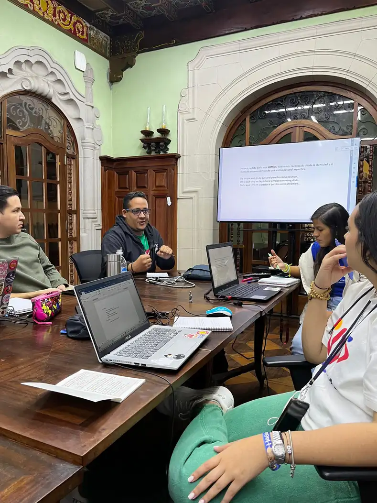

Laicos
Área de Laicos
El Área de Laicos anima la vocación y la misión de los fieles laicos y acompaña su apostolado. Ofrece formación integral, gradual y permanente, y trabaja con asociaciones, movimientos y consejos de laicos de las diócesis.

Qué es el Área
Es una de las tres áreas del Centro de Laicos, Familia y Juventud del Secretariado Permanente del Episcopado Venezolano (SPEV). El Rediseño del SPEV, aprobado en enero de 2023, la llama «Laicos». Rediseño del SPEV
El Área promueve los nuevos ministerios y oficios eclesiales que pueden confiarse a laicos. Impulsa su protagonismo y la reflexión sobre la teología del laico. La coordina la directora del Centro, Saritza Roque.
A qué se dedica
Según el Rediseño, el Área se ocupa de:
- Animar la vocación y la misión de los laicos.
- Acompañar su apostolado.
- Promover nuevos ministerios y oficios eclesiales confiados a laicos.
- Ofrecer formación integral, gradual y permanente.
- Impulsar la reflexión sobre la teología del laico.
El mismo documento aclara que estas competencias son orientativas. No son una lista cerrada. Rediseño del SPEV
Con quién trabaja
El Área acompaña a los secretariados y a otras instancias diocesanas. Actúa en sinergia con el organismo laical nacional y con la Red de Movimientos Juveniles. Se vincula con la Comisión Episcopal de Laicos y Ministerios. Rediseño del SPEV
Actividades recientes
- Octubre y noviembre de 2025: cuatro sesiones virtuales sobre prevención de abusos y cultura del buen trato para movimientos y asociaciones. CEV, 27-11-2025
- 29 de noviembre de 2025: participación en el Jubileo de los Movimientos de Apostolado, en Coromoto, con una reflexión de la directora sobre sinodalidad. CEV, 03-12-2025
- Marzo de 2026: formación misionera de Semana Santa junto a Obras Misionales Pontificias. CEV, 13-03-2026
- Diálogos de escucha y oración con laicos, dados a conocer el 17 de abril de 2026. CEV, 17-04-2026
- 16 a 18 de junio de 2026: I Encuentro Nacional de Asesores, con más de 70 asesores según la CEV. CEV, 19-06-2026
- 13 a 15 de noviembre de 2026: Encuentro Nacional de Laicos «Unidos en la Misión 2026», donde se definieron las líneas pastorales de esperanza, reconciliación y acompañamiento espiritual. CEV, 16-11-2026
Videos
Por una fe viva más allá de las fronteras: «Experiencia de Fátima Peregrina»
Presenta a María como «Peregrina de la Esperanza» bajo la advocación de Nuestra Señora de Fátima. Es una pieza del canal del Centro.
Publicado el 20 de febrero de 2025 · 14:04 · Fuente: canal de YouTube del Centro
«María la espera que transforma»: ¿A quién esperamos? Encuentro 1
Primer encuentro de la serie de Adviento del Centro: la figura de María como espera que transforma. La serie se publicó en el canal del Centro.
Publicado el 1 de diciembre de 2025 · 20:36 · Fuente: canal de YouTube del Centro
«José la espera que protege»: ¿A quién esperamos? Encuentro 2
Segundo encuentro de la serie de Adviento: el ejemplo de San José, el hombre justo y silencioso. Continúa el camino del primer encuentro.
Publicado el 8 de diciembre de 2025 · 13:34 · Fuente: canal de YouTube del Centro
Niño Dios: ¿A quién espero conocer? Encuentro 3
Tercer encuentro de la serie de Adviento, centrado en el misterio de la Encarnación, el corazón de la Navidad.
Publicado el 15 de diciembre de 2025 · 17:36 · Fuente: canal de YouTube del Centro
¿Qué llevo yo? Encuentro 4
Cuarto y último encuentro de la serie de Adviento: pasa de la espera a la pregunta personal por lo que cada uno lleva al encuentro con Cristo.
Publicado el 22 de diciembre de 2025 · 4:33 · Fuente: canal de YouTube del Centro
Para profundizar
Eventos de esta área
Del 13 al 15 de noviembre de 2026
Del 16 al 18 de junio de 2026
I Encuentro Nacional de Asesores 2026
RealizadoEncuentro · Laicos
Desde el 30 de noviembre de 2025
Sábado 29 de noviembre de 2025
Lunes 6 y 13 de octubre y 10 y 24 de noviembre de 2025
Durante 2026 (dados a conocer el 17 de abril)
Diálogos de escucha y oración con laicos
En cursoDiálogo · Laicos
Miércoles 11 y viernes 20 de marzo de 2026
Antes del 2 de febrero de 2026